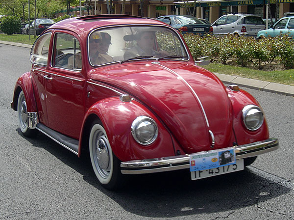

L'histoire de la Volkswagen Coccinelle remonte aux années 1930 en Allemagne, à une époque où Adolf Hitler était au pouvoir. Le Führer avait une vision de créer une voiture abordable et accessible pour le peuple allemand, et il a exprimé ce souhait à Ferdinand Porsche, un ingénieur renommé.
En 1934, Ferdinand Porsche a reçu la mission de concevoir une voiture populaire qui pourrait transporter deux adultes et trois enfants, atteindre une vitesse de 100 km/h, et être économique à la fois en termes de consommation de carburant et de coût de production. Ce projet a été appelé la "Voiture du Peuple" en allemand, qui est à l'origine du nom Volkswagen.
La première voiture résultante était la Volkswagen Type 60, qui a ensuite évolué pour devenir la Coccinelle. La production de la Coccinelle a officiellement commencé en 1938 dans une nouvelle usine à Fallersleben, mais la Seconde Guerre mondiale a interrompu la production de voitures civiles. Pendant la guerre, l'usine a été utilisée à des fins militaires.
Après la guerre, la Volkswagen Coccinelle a connu une résurrection. Les forces alliées qui occupaient l'Allemagne ont montré de l'intérêt pour la voiture et ont relancé la production en 1945. La Coccinelle est devenue populaire aux États-Unis dans les années 1950 et a connu un immense succès en raison de sa conception simple, de sa fiabilité et de sa facilité d'entretien.
Au fil des années, la Coccinelle a subi plusieurs modifications et améliorations. Elle est devenue un symbole de la contre-culture dans les années 1960, associée au mouvement hippie. La production de la Coccinelle a continué jusqu'en 2003 au Mexique, ce qui en fait l'une des voitures les plus produites de l'histoire.
En 1998, Volkswagen a introduit la Nouvelle Coccinelle, une version modernisée et redessinée de la voiture classique, tout en conservant son aspect distinctif. Cependant, en 2019, Volkswagen a annoncé que la Coccinelle serait abandonnée après la production de l'édition finale, mettant ainsi fin à une époque de l'histoire automobile. La Coccinelle reste cependant un modèle emblématique et apprécié par de nombreux amateurs de voitures classiques.